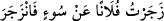

yemin etmiştir. Bunlar saf tutan melek gruplarıdır. Burada namaz yahut savaş için olduğu
kastedilmeksizin sadece saf tutmalarına vurgu yapılmıştır. Ubûdiyet ve taat makamında
saf saf duranlara yemin olsun, demektir. Yahut taat ve hizmet menzillerinde kıyam
ederek nefislerini safların ipine dizenlere yemin olsun, demektir.
Hadis-i şerifte şöyle buyrulmaktadır: “Meleklerin Rableri katında saf tuttukları gibi
saf tutunuz. Biz: “Rableri katında melekler nasıl saf tutuyorlar?” dedik. Hz.
Peygamber (s.a.): “Ön safları tamamlayıp safta kenetleniyorlar” buyurdular.[196] Safta
kenetlenmek, safta güzel durmak, safı güzel tutmak demektir.
İbn Ömer (r.a.) namaza başladığı zaman saflarınızı düzeltiniz; sen öne gel, sen de
arkada kal. Elbette Allah Teâlâ size melekleri örnek gösteriyor ve “Saf saf
dizilmişlere” buyuruyor, derdi. Yâni Hak Teâlâ, meleklere uyun diye onları size örnek
gösterir.
İbn Abbas (r.a.)’dan rivâyet edildiğine göre melekler saf saf olurlar; hiç biri yanında
kim olduğunu bilmez. Yaratıldığı andan itibaren hiç sağa sola iltifat etmezler. Kâmûs’ta
der ki: “Saf saf dizilmişlere” ifadesinde kastedilen havada saf tutup tesbih eden
meleklerdir. Namaz kılanlar saf tuttukları gibi onlar da bulundukları mertebelerde saf
tutarlar. Bazıları der ki, bu melekler havada kanatlarını açıp idare tedbir ve yönetimle
ilgili Allah Teâlâ’nın emrini beklerler. Bu konuda daha başka rivâyet ve görüşler de
vardır. Allah Teâlâ’nın bu sûrenin sonlarındaki “Şüphesiz biz, orada sıra sıra
dururuz.” (es-Sâffât 37/165) kavli bu rivâyet ve görüşlerin hepsini ihtiva eder.
Bazı büyükler der ki, melekler üç gruptur: Birinci grup, Allah Teâlâ’nın celâl ve
azametine meftun ve âşık olanlardır. Allah Teâlâ “Celîl” ismiyle onlara tecelli etmiş;
onları kendi zâtına meftun ve âşık etmiş ve onları kendilerinden fânî kılmıştır. Artık
onlar kendilerini ve âşık oldukları zâtı bilmezler. İkinci sınıf hizmete âmâde olanlardır.
Reisleri tedvin ve tastîr (yazı) âleminin sultanı yüce kalemdir. Üçüncü sınıf her cins ve
her çeşit cisimleri tedbir edenlerdir. Bunların hepsi hizmette saf tutmuşlardır. Memur
oldukları işlerden başka meşguliyetleri yoktur. Onların lezzet ve rahatları memur
oldukları işlerdedir. Âyet meleklerin şeref ve itibarlarını beyan etmektedir. Zira
meleklere ve onların saflarının üstünlüğüne yemin edilmiştir. Şeytanın safların
aralarındaki boşluklarda durduğu sahih haberle sabittir. Öyleyse hem zâhirî ve hem de
bâtınî anlamda toplanmalı, birbirine yanaşmalı ve kenetlenmelidir.
“toplayıp sürenlere” Deveyi yürümeye teşvik ettiğin zaman “__WORD__ dersin. Kişiyi
bir şeyden men edip alıkoyduğun ve o kimse de o işten vazgeçip sakındığı zaman “
” denilir. Buna göre deveyi bağırarak zecr etmek, onu teşvik
etmek; insanı zecr etmek ise onu nehyetmek anlamına gelir. Keşfü’l-esrâr’da der ki,
“zecr” korku ve tehditle bir şeyden dönmek/döndürmektir. el-Müfredât’ta der ki, “zecr”
seslenerek/bağırarak kovmaktır. Sonra bazen kovmada bazen de sesle kovmada
kullanılmıştır. Tâcü’l-mesâdir’de der ki, “zecr” yürümesi için binek hayvanını
korkutmak ve bağırmaktır. Yani zecir ve men işini toplayıp sürenler, yapanlar demektir.